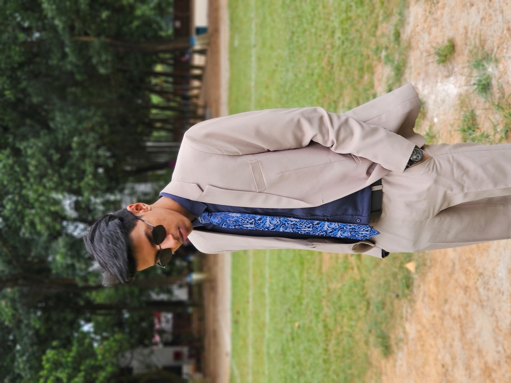

Welcome to my travel blog, Love Travelling. I’m Suhail, an award winning independent traveller writing about my visits to countries near and far.
I research destinations myself and that’s part of the fun – visiting the local library and selecting some travel guides, looking things up online and, of course, all the amazing tips I discover from fellow travel bloggers.
The world is a book and those who do not travel read only one page.
Augustine of Hippo
My passion is travel, I just love visiting new places, immersing myself into local cultures of life around the world and discovering the unexpected! Stepping off a plane, I’m always in a hurry to get my passport stamped, reclaim my luggage and walk out of the arrivals hall ready to begin a new adventure.
Read more
